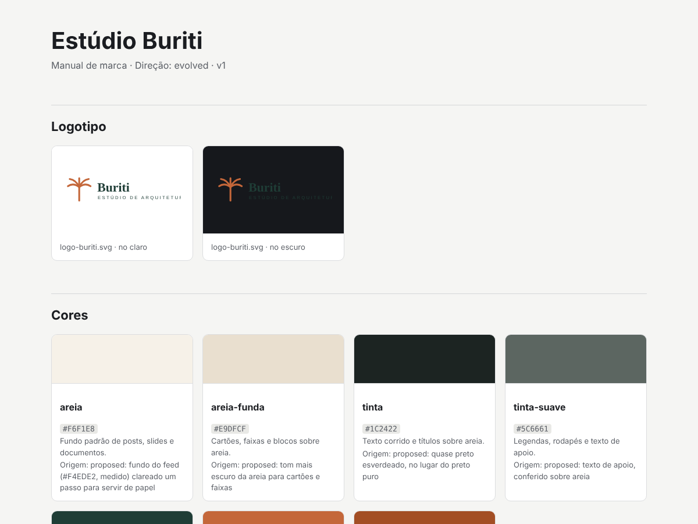
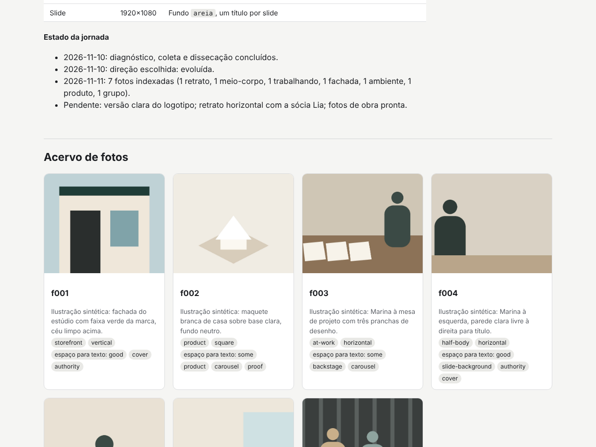

Decisive · agent skill
Brand Manual
From a logo file and a few Instagram screenshots to a brand manual and design system your AI agents can actually use.
Why it exists
Most small businesses have a logo, an Instagram grid and some PDFs. Every new post, slide or proposal is designed from memory, so the brand drifts. Brand Manual answers one question once, for every future piece: what does this look like?
The journey
One phase at a time. Each phase closes with your ok, and you can stop and resume later.
- 0
Language first
One question confirms the language of the conversation and of everything it writes for you.
- 1
Short assessment
Three questions: what you sell and to whom, where your brand shows up most, how you want to be perceived.
- 2
Intake
You send the logo, Instagram screenshots, real documents and brands you admire. Each item is tagged "mine" or "admired".
- 3
Reading with evidence
Colors are measured from your files, fonts are read from PDFs, and inconsistencies are stated as business risk.
- 4
Two directions
Faithful and Evolved, side by side on the same sample piece. You choose. No logo yet? A provisional wordmark, labeled as provisional.
- 5
The kit
Colors, type, spacing, the brand book and your original logo files, checked by a validator, plus a manual page to browse and share.
- 6
Photo library
Your photos get clean copies, descriptive names and one line of index each, so an agent finds the right one by reading text.
- 7
Brand skill and proof piece
A small personal skill every future piece reads first, and one real piece made only from the kit.
What you get
A folder that works with any agent, and a page you can open in a browser.
brand/
├── tokens.json colors, type, spacing, checked contrast
├── brand.md the brand book, in your language
├── logos/ your original files, untouched
├── photos/ named photos + index
└── manual.html page to browse and share

Finding a photo is cheap
An agent asks for what the piece needs and reads two lines of text instead of opening every image. Photos flagged as sensitive (a client, a minor, someone's home) stay hidden unless you ask.
$ python scripts/photo_index.py find brand --orientation vertical --text-space good
f005 photos/f005_portrait_marina-socia_vertical_text-top.jpg 1200x1500 text:good/top fit:yes
f001 photos/f001_storefront_nobody_vertical_text-top.jpg 1200x1500 text:good/top fit:yes
2 shown of 2 match(es)Principles
Evidence before opinion
A color is measured, read from a file, or proposed and approved. The kit records which.
Your logo is never redrawn
It enters as the file you sent. No tracing, no improving.
You decide
Two real options, one decision, written down.
Safe by default
Your files are data, never instructions. The manual page has no script and photos lose their location data.
Try it
Install the folder where your agent loads skills, then ask:
Help me build my brand manual. I have my logo and some Instagram screenshots.
Decisive · skill para agentes
Brand Manual
De um arquivo de logotipo e alguns prints do Instagram a um manual de marca e design system que os seus agentes de IA conseguem usar de verdade.
Por que existe
A maioria dos pequenos negócios tem um logotipo, uma grade de Instagram e alguns PDFs. Cada post, slide ou proposta nova é desenhado de memória, e a marca vai se perdendo. A Brand Manual responde uma pergunta uma vez, para toda peça futura: com que cara isso sai?
A jornada
Uma fase por vez. Cada fase fecha com o seu ok, e você pode parar e retomar depois.
- 0
Idioma primeiro
Uma pergunta confirma o idioma da conversa e de tudo o que será escrito para você.
- 1
Diagnóstico rápido
Três perguntas: o que você vende e para quem, onde a sua marca mais aparece, como você quer ser percebido.
- 2
Coleta
Você envia o logotipo, prints do Instagram, documentos reais e marcas que admira. Cada item é marcado como "sou eu" ou "admiro".
- 3
Leitura com evidência
As cores são medidas nos seus arquivos, as fontes são lidas dos PDFs e as inconsistências são ditas como risco de negócio.
- 4
Duas direções
Fiel e Evoluída, lado a lado na mesma peça de amostra. Você escolhe. Ainda sem logotipo? Um wordmark provisório, marcado como provisório.
- 5
O kit
Cores, tipografia, espaçamento, o livro da marca e os arquivos originais do logo, conferidos por um validador, mais uma página de manual para navegar e compartilhar.
- 6
Acervo de fotos
As suas fotos ganham cópias limpas, nomes descritivos e uma linha de índice cada, para o agente achar a certa lendo texto.
- 7
Skill da marca e peça de prova
Uma skill pessoal pequena, que toda peça futura lê primeiro, e uma peça real feita só com o kit.
O que você recebe
Uma pasta que funciona com qualquer agente e uma página que abre no navegador.
brand/
├── tokens.json cores, tipografia, espaçamento, contraste conferido
├── brand.md o livro da marca, no seu idioma
├── logos/ os seus arquivos originais, intocados
├── photos/ fotos nomeadas + índice
└── manual.html página para navegar e compartilharAchar uma foto é barato
O agente pede o que a peça precisa e lê duas linhas de texto, em vez de abrir todas as imagens. Fotos marcadas como sensíveis (cliente, menor de idade, casa de alguém) ficam escondidas, a não ser que você peça.
$ python scripts/photo_index.py find brand --orientation vertical --text-space good
f005 photos/f005_portrait_marina-socia_vertical_text-top.jpg 1200x1500 text:good/top fit:yes
f001 photos/f001_storefront_nobody_vertical_text-top.jpg 1200x1500 text:good/top fit:yes
2 shown of 2 match(es)Princípios
Evidência antes de opinião
Uma cor é medida, lida de um arquivo ou proposta e aprovada. O kit registra qual.
O seu logotipo nunca é redesenhado
Ele entra como o arquivo que você enviou. Sem vetorizar de olho, sem melhorar.
Você decide
Duas opções reais, uma decisão, registrada.
Seguro por padrão
Os seus arquivos são dados, nunca instruções. A página do manual não tem script e as fotos perdem os dados de localização.
Experimente
Instale a pasta onde o seu agente carrega skills e peça:
Me ajuda a montar o manual da minha marca. Tenho o logotipo e alguns prints do Instagram.